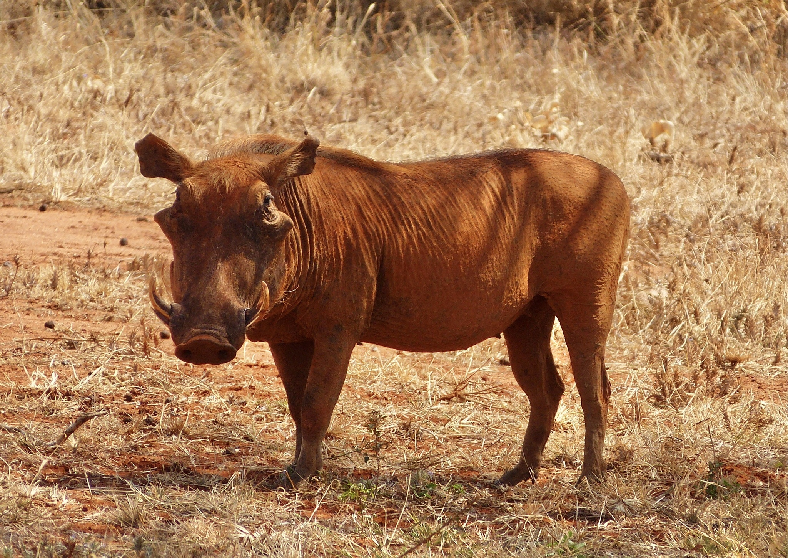

WARTHOG
The desert warthog is a member of the pig family. It has a large, warty head, a coarse mane, and two pairs of tusks. Unlike the common warthog, which can be found across most of Africa, the desert warthog only lives in Kenya, Ethiopia, and Somalia. It lives in savannah and shrubland habitats, where it feeds on grass and other vegetation and uses abandoned aardvark burrows as a place to shelter.
The desert warthog is listed by the IUCN as least concern. However, the population faces several risks in Kenya, including growing human and livestock numbers. This increases competition for both water and food.
